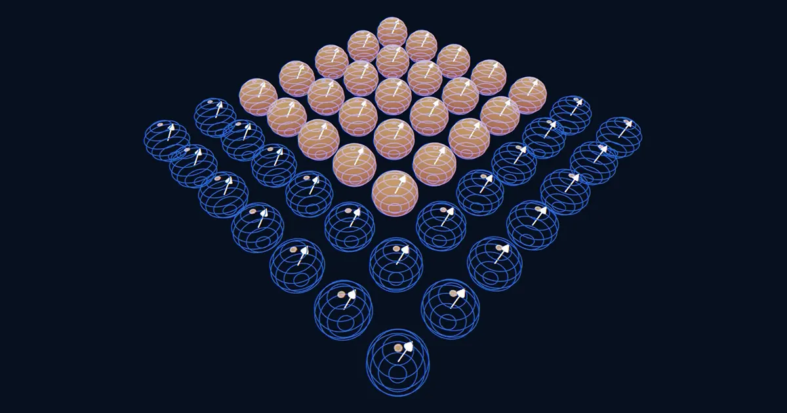
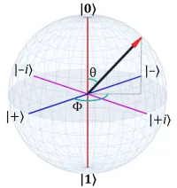

Why Quantum Error Correction is Hard

So far we have seen how classical error correction works: encode a logical bit across multiple physical bits, measure them, and apply a majority vote. Clean, intuitive, and effective. Now we ask: can we do the same thing for quantum information?
The answer is yes — but the path there is more treacherous. Here we explain why.
From Bits to Qubits
Before we can understand why quantum error correction is hard, we need to understand what we are trying to protect.
In place of the classical bit, the fundamental unit of quantum information is the qubit. The general state of a qubit can be written as:
\[ |\psi\rangle = \alpha|0\rangle + \beta|1\rangle \]where \(\alpha\) and \(\beta\) are complex numbers satisfying \(|\alpha|^2 + |\beta|^2 = 1\). Unlike a classical bit, which is either 0 or 1, a qubit can exist in a superposition of both basis states simultaneously. The coefficients \(\alpha\) and \(\beta\) encode the probability of measuring the qubit in each state: measuring \(|\psi\rangle\) yields \(0\) with probability \(|\alpha|^2\) and \(1\) with probability \(|\beta|^2\).
What Makes Quantum Error Correction Hard?
1. No Cloning
The first step of classical error correction was simple: copy the bit multiple times. This is impossible for quantum states.
The no-cloning theorem states that there is no physical operation that can take an unknown quantum state \(|\psi\rangle\) and produce two independent copies of it. This rules out the most direct translation of the classical repetition code to the quantum setting.
Quantum error correction has to find a different way to add redundancy, one that is consistent with the laws of quantum mechanics.
2. Errors are Continuous
Classical bits have only one type of error: a bit flip. A 0 becomes a 1, or vice versa. The space of possible errors is discrete and small.
Qubits are very different. Because a qubit state is specified by continuous coefficients \(\alpha\) and \(\beta\), errors are also continuous. The state of a qubit can be pictured as a point on the surface of a sphere, called the Bloch sphere.

Every point on the surface of the sphere represents a different quantum state, so there are infinitely many ways the state of a qubit can be changed. This includes:
- Bit-flip errors (\(X\) errors): \(|0\rangle \leftrightarrow |1\rangle\), the direct quantum analogue of a classical bit flip.
- Phase-flip errors (\(Z\) errors): \(|0\rangle \to |0\rangle,\ |1\rangle \to -|1\rangle\), which has no classical analogue at all.
- Combined errors (\(Y\) errors): a simultaneous bit and phase flip.
- Rotation errors: small, partial rotations that leave the qubit somewhere between its intended state and a flipped one.
With infinitely many possible error types, it seems like correcting all of them would require an impossibly complex procedure. This apparent complexity is one of the reasons many physicists initially doubted that quantum error correction could work at all.
3. Measurement Destroys Quantum Information
In classical error correction, error detection is straightforward: read the bits and compare them. Measurement is free and harmless.
In quantum mechanics, measurement is destructive. When you measure a qubit, you collapse its superposition to a definite outcome, and the delicate quantum information encoded in the amplitudes \(\alpha\) and \(\beta\) is irreversibly lost. This means we cannot simply read out the physical qubits to check for errors the way we do classically. Any attempt to look at the encoded information directly would destroy it.
This forces quantum error correction to take a fundamentally different approach: we must diagnose errors indirectly, through carefully chosen measurements that reveal what went wrong without ever revealing what the logical qubit's state actually is. These special measurements are called syndrome measurements, and designing them correctly is at the heart of every quantum error correcting code.
Despite All This, Quantum Error Correction is Possible
The obstacles above make quantum error correction seem hopeless. It turns out not to be. Next, we'll begin exploring the approaches used to overcome these challenges.